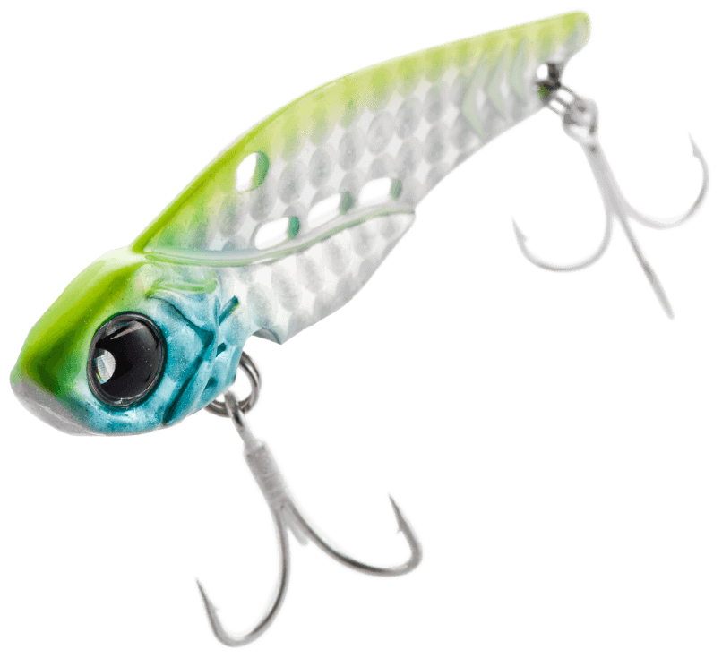
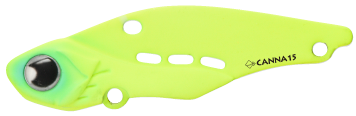
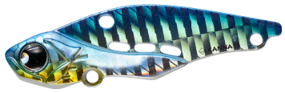
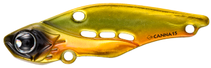
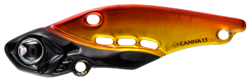

カンナ15
（CANNA15）
CANNA15（カンナ15）はPOP SEA CREW（ポップシークルー）のシンキングバイブレーションです。
抜群の飛距離と最適な強さのアクションに設定された全長58mm・15gの小型バイブ。巻き始めの動き出しの良さと、低速〜高速までの幅広い速度域をカバーし、水深の浅い港湾部や河川での使用に最適なモデルです。

画像出典:POP SEA CREW公式HP
スペック
- メーカー
- POP SEA CREW（ポップシークルー）
- タイプ
- シンキング（バイブレーション）
- 全長
- 58mm
- 自重
- 15g
- フック
- #10
- リング
- #2
- ターゲット
- シーバス
- 価格
- 1,485円（税込）
▼今すぐチェック

CANNA15の特徴
巻いても、ボトムで「起こす・倒す」でも誘える、浅場向けの小型バイブ
-
軽快な動き出しと強波動
巻き始めから軽快に動き出し、低速〜中速域のただ巻きでもバイトを誘う強い波動を出す。浅い場所でも、ゆっくり巻いてしっかりアピールできる。
-
着脱しやすいONEラインアイで幅広いスピード域に対応
ラインアイは着脱しやすいONEラインアイ仕様。低速から高速まで幅広い速度域で使える設計になっている。
-
V字ボトムと3つのウォーターホールで着底時に倒れやすい
V字型のボトム形状と「3passing water hole」の相互効果で、着底時に倒れやすい姿勢を演出。ボトムでの誘いにもつなげられる。
CANNA15の使い方
基本は低速〜中速のただ巻き。動き出しが良いので、着水後すぐに巻き始めても波動を出してくれます。
ボトム付近を狙うときは、メーカーが勧める「起こす・倒す」の誘いが有効。着底後にロッドを小さく上下に動かして、ボディを起こしたり倒したりを繰り返すことで、ルアーを魚の視界から消しては見せ、探したくなる本能を刺激してバイトに持ち込みます。
CANNA15の得意な状況
水深の浅い港湾部や河川が最大の出番。
15gの小型ボディで浅場でも根掛かりを気にしすぎずに使え、巻きとボトムでの誘いの両方で探れるのが強みです。シャローエリアで、バイブレーションの波動で魚を探したいときの1本になります。
ワンポイント
浅い場所でボトムを取りすぎると根掛かりしやすくなるので、まずはただ巻きで中層〜底付近を通し、反応が無ければボトムでの「起こす・倒す」に切り替えるのがオススメです。
ロッドの上下は小さく、が基本。大きくあおるとボトムから離れすぎて、倒れる動きを活かしにくくなります。
小型バイブレーションの使い分け
| モデル | 全長／自重 | 得意な場面 |
|---|---|---|
| CANNA15 | 58mm／15g | 港湾・河川のシャロー。ただ巻きとボトムでの「起こす・倒す」（本記事のモデル） |
| 鉄PANバイブ 14g | 55mm／14g | 遠投性・レスポンス・強波動を融合した特攻系メタルバイブ |
| ラナケラ57-13S | 57mm／13g | 同じ小粒サイズのシンキングルアー。シーバス用 |
CANNA15は、浅い港湾・河川での使いやすさと、着底時の倒れを使った誘いが持ち味。サイズや重さが近いルアーと、使う場所や誘い方で使い分けるとローテーションが組みやすくなります。
人気カラー
CANNA15は全10色展開。港湾・河川のシーバス狙いでオススメのカラーを厳選して紹介します。

マットチャート視認性とアピールの高い定番チャート。濁りやマズメに。

オーシャンブルーブルー系のカラー。澄み潮や日中に。

サンセットゴールドゴールド系のフラッシング。ローライトや濁りに。

チェッカーチェック柄の個性的なカラー。ほかと違う見せ方をしたいときに。
画像出典:POP SEA CREW公式HP
CANNA15に似ているルアー
-
 鉄PANバイブ
ジャクソン
詳細はこちら＞
鉄PANバイブ
ジャクソン
詳細はこちら＞
9〜26gのメタルバイブレーション。14gはCANNA15と近いサイズ感で、遠投と強波動で広く探りたいときの持ち替えに。
-
 ラナケラ57-13S
TREFLE CREATION
詳細はこちら＞
ラナケラ57-13S
TREFLE CREATION
詳細はこちら＞
全長57mm・自重13gのシンキングルアー。CANNA15とほぼ同じサイズで、シーバスを狙う小粒ルアーとして選択肢が重なる。
-
 ビッグバッカー107
ジャッカル
詳細はこちら＞
ビッグバッカー107
ジャッカル
詳細はこちら＞
全長107mm・自重27gのメタルバイブレーション。より大きく重いモデルで、サーフなど遠投が必要な場面での持ち替えに。